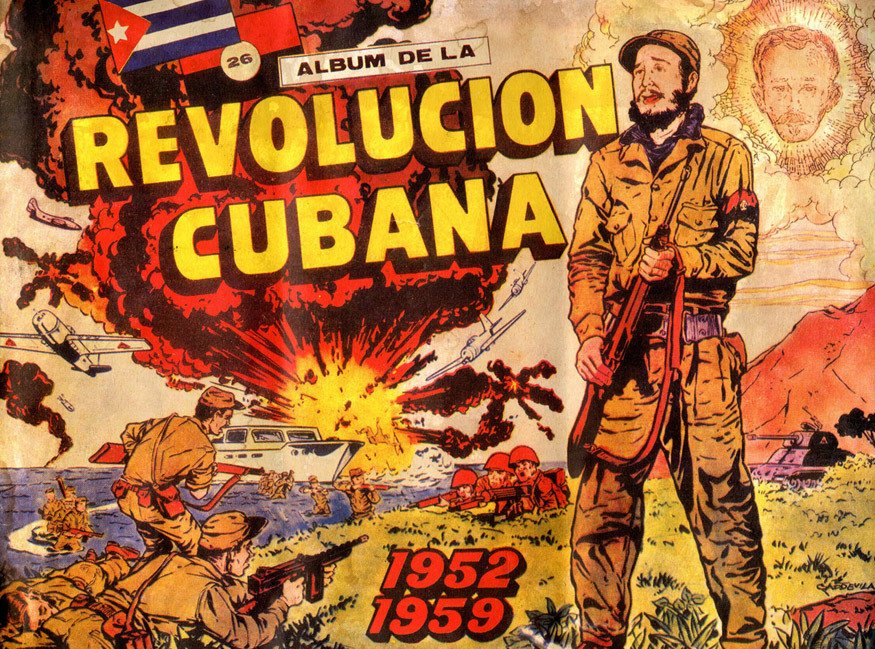
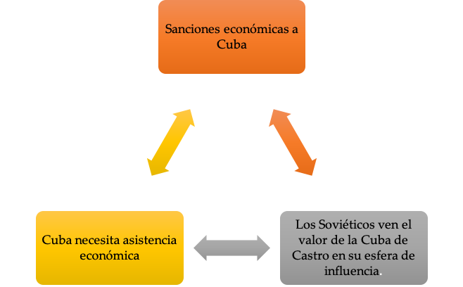
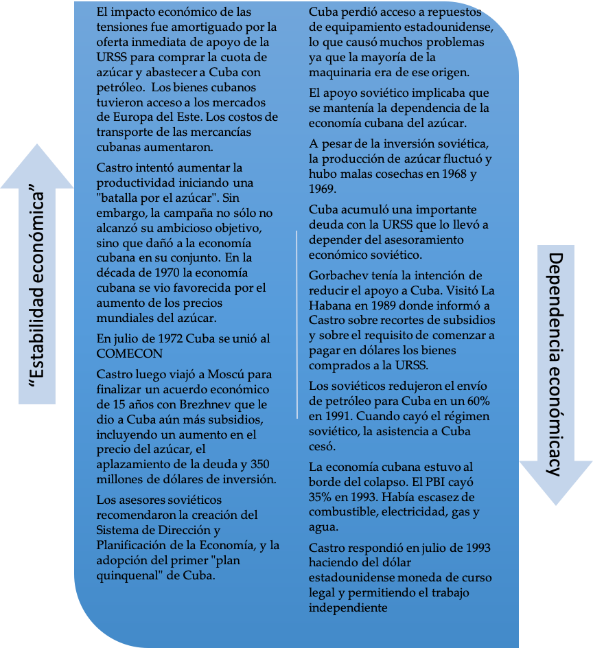
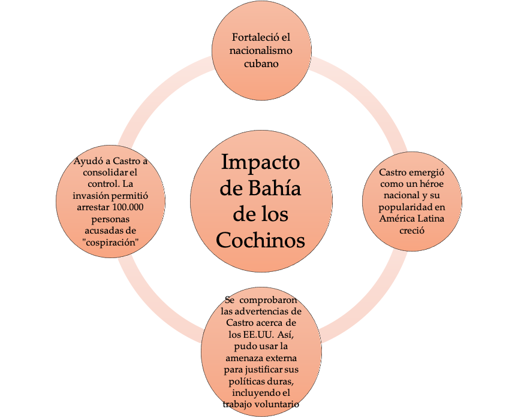

IB Docs (2) Team
IB Docs (2) Team

Naciones afectadas por las tensiones de la Guerra Fría: Cuba

Cuba funciona bien como ejemplo de un país cuya políticas económicas, políticas, sociales y exteriores fueron impactadas por la rivalidad de las superpotencias en la Guerra Fría.
Estas página abarcan los aspectos de su gobierno y las políticas en los que la Guerra Fría inpactó.
Preguntas orientadoras:
¿Cuál fue el impacto económico inicial de las rivalidades entre las superpotencias de la Guerra Fría en Cuba?
¿Cuál fue el impacto económico a largo plazo de las tensiones de la Guerra Fría en Cuba?
¿Cuál fue el impacto de las rivalidades de las superpotencias de la Guerra Fría en la política exterior cubana?
¿Cuál fue el impacto social y cultural de las tensiones de la Guerra Fría en Cuba?
1. ¿Cuál fue el impacto económico inicial de las rivalidades de las superpotencias de la Guerra Fría en Cuba?
Castro dio una idea clara de sus planes para Cuba cuando, después de un intento fallido de derrocar al General Batista en julio de 1952, hizo un ahora famoso discurso en el que afirmó que "la historia me absolverá". Estableció "cinco leyes revolucionarias" que serían la base de su manifiesto:
1. Devolver el poder al pueblo
2. Dar derechos sobre la tierra a los que tenían u ocupaban parcelas pequeñas.
3. Permitir que los trabajadores tuvieran una participación del 30% de los beneficios
4. Permitir que los trabajadores de las plantaciones de azúcar tuvieran una participación del 55% en los beneficios
5. Poner fin a la corrupción.
También prometió pensiones, hospitales, educación pública, nacionalización de servicios públicos y control de rentas. (Véase 2. Gobierno de Fidel Castro)
Tarea Uno
ATL: Habilidades de pensamiento
De a dos, repasen la revolución cubana y el manifiesto promovido por el Movimiento 26 de Julio de Castro. Discutan sobre la naturaleza de la agenda de "justicia social" de Castro y determinen qué elementos de esa agenda podrían causar preocupación dentro de los EE.UU. en el contexto más amplio de la Guerra Fría.
Cuando finalmente entró en La Habana en 1959, tras la derrota de Batista después de una guerra de guerrillas, Castro estaba listo para aplicar las cinco leyes revolucionarias. Sin embargo, no tenía un plan claro. Poco después visitó los EE.UU. para pedir ayuda en la aplicación de su amplio paquete de reformas para Cuba.
Sin embargo, en el contexto de la Guerra Fría, las políticas que Castro creía que traerían justicia social y económica a Cuba fueron vistas por los EE.UU. como medidas de corte comunista. La Ley de Reforma Agraria de julio de 1959 desarmó latifundios y redistribuyó la tierra a los campesinos, mientras que las medidas para eliminar los monopolios de EE.UU. parecían confirmar los temores norteamericanos. Eisenhower pudo haber ayudado a la victoria de Castro cuando el presidente suspendió los envíos de armas a Batista. Pero los EEUU claramente querían que el nuevo gobierno revolucionario fracasara y negaron ayuda a Cuba.
Eisenhower suspendió la importación de azúcar cubano en 1960 y extendió las sanciones económicas a un embargo comercial de azúcar, petróleo y armas. En 1961 Kennedy amplió los términos de las sanciones, y la tensión aumentó aún más cuando Castro nacionalizó las refinerías de petróleo de EE.UU.
Además:
- Cuba fue excluida de la OEA [había sido miembro fundador]
- Todos los miembros de la OEA, a excepción de México ,cortaron lazos comerciales y diplomáticos con Cuba
- Kennedy intentó impedir a los miembros de la OTAN que comerciaran con Cuba
- Kennedy lanzó la Alianza para el Progreso - un programa para ayudar al desarrollo de América Latina
- La Operación Mangosta involucró a la CIA llevando a cabo actos de sabotaje contra la economía cubana.
Estas acciones animaron a Castro a recurrir a la URSS para asegurar la supervivencia económica de Cuba.
Tarea dos
ATL: Habilidades de pensamiento
De a dos, hagan una copia de este gráfico y añadan información del material anterior para explicar cómo los factores económicos podrían haber empujado a la Cuba de Castro a estrechar sus lazos con la URSS

2. ¿Cuál fue el impacto económico a largo plazo de las tensiones de la Guerra Fría en Cuba?
En febrero de 1960 el viceprimer ministro de la URSS, Anastas Mikoyan, inauguró una exposición comercial en Cuba. Además, la URSS comenzó a suministrar petróleo a precios más baratos que los que Cuba había pagado a los EE.UU. Los soviéticos "salvaron" la economía cubana.
Los soviéticos acordaron comprar el excedente de azúcar de Cuba y ofrecieron precios garantizados por 10 años. La República Popular China también firmó un contrato de cinco años para comprar azúcar.
La economía cubana se benefició así con el apoyo de la URSS y la RPC; Sin embargo, también hubo desventajas

Tarea Uno
ATL: Habilidades de pensamiento
En grupos discutan el impacto a largo plazo de las tensiones de la Guerra Fría en la economía cubana.
3. ¿Cuál fue el impacto político e ideológico en Cuba de las rivalidades de las superpotencias de la Guerra Fría?
Task One
ATL: Thinking Skills
Vea el siguiente video de la Guerra Fría de la CNN sobre la crisis cubana hasta el minuto 15.
Haga clic en el ojo para las preguntas.
- ¿Qué acciones tomó Castro que molestaron a los americanos?
- ¿Cómo tomaron los americanos represalias?
- ¿Por qué Castro acudió a los soviéticos en busca de ayuda? ¿Cómo respondieron los soviéticos a esto?
- ¿Por qué Kennedy aceptó la invasión de la CIA a Cuba?
- ¿Cómo alteró Kennedy los planes?
- ¿Por qué fracasó la operación?
- ¿Cuál fue el impacto de este fracaso?
- ¿Qué acciones tomó la CIA después?
El embargo de EE.UU. no socavó la popularidad de Castro y no desató la contrarrevolución. Las políticas de EE.UU. en realidad permitieron a Castro reunir apoyo nacionalista de su población, que se fortaleció después de Bahía de los Cochinos y la crisis de los misiles cubanos.
Castro sólo comenzó a llamar "socialista" a la revolución después de los ataques aéreos de EE.UU. sobre Cuba el 16 de abril de 1961, en el preludio de la invasión de Bahía de Cochinos. Se podría argumentar que para conseguir el apoyo militar soviético y el compromiso con la revolución cubana, Castro se alineó ideológicamente con la URSS. De hecho, a partir de Bahía de Cochinos, afirmó abiertamente que siempre había sido un marxista. Esto significaba que Castro podía utilizar la amenaza tangible de EE.U.U. para consolidar su control político.

Castro pudo usar la amenaza de las "fuerzas imperialistas" para conseguir apoyo para nuevas leyes y directivas. La supervivencia de Castro a varios planes de EE.UU. para asesinarlo le permitió seguir apelando a un sentimiento nacionalista.
Tarea Uno
ATL: Habilidades de investigación
1. Explora los discursos políticos y la propaganda del régimen de Castro entre 1959 y 1991. Identifica tanto el cambio como la continuidad en los temas políticos que encuentres.
2. Explora las limitaciones a los derechos humanos en Cuba entre 1959 y 1991.
3. ¿Cuál fue el impacto de las rivalidades entre las superpotencias de la Guerra Fría sobre la política exterior cubana?
La crisis de los misiles (América)
Cuba se encontró en el centro de las rivalidades de la Guerra Fría en 1962; el resultado impactó sobre la Guerra Fría en general, así como en la propia política exterior de Castro.
Como han visto, las crecientes tensiones entre Cuba y los EE.UU. después de la Revolución Cubana dieron lugar a la invasión de Bahía de Cochinos. A medida que las relaciones entre Cuba y los EE.UU. empeoraban, crecía la amistad entre la URSS y Cuba.
Tarea Uno
ATL: Habilidades de pensamiento
Sigue viendo el video de CNN.
Tome notas sobre los eventos de la crisis de los misiles cubanos
No está totalmente claro por qué Khrushchev instaló misiles en Cuba. Khrushchev escribió en sus memorias que la razón era proteger a Cuba y también porque "ya era hora de que América aprendiera lo que se siente al tener su propia tierra y su propio pueblo amenazados". Los Estados Unidos tenían misiles en Turquía, que limitaba con la Unión Soviética. Por lo tanto, colocar misiles a una distancia similar de los Estados Unidos se consideraba una forma de restablecer el equilibrio. Igualmente importante era el objetivo de Khrushchev de aprovechar una ventaja propagandística tras la humillación del Muro de Berlín y poder impedir el estacionamiento de misiles nucleares estadounidenses en Europa. John Lewis Gaddis, sin embargo, cree que Khrushchev puso los misiles en Cuba principalmente porque temía otra invasión y estaba decidido a salvar la revolución cubana.
Como han visto en el video, el Comité Ejecutivo consideró varias opciones para tratar con los soviéticos y Cuba. Kennedy rechazó los llamados de los militares para un inmediato ataque aéreo seguido de una invasión a Cuba y ordenó en su lugar un bloqueo naval de la isla. El Presidente anunció en televisión el establecimiento de la "cuarentena" en torno a Cuba para evitar el envío de ojivas nucleares a la isla. Aunque inicialmente los barcos soviéticos continuaron dirigiéndose a Cuba, el 24 de octubre, seis barcos dieron la vuelta. En este punto Dean Rusk, el Secretario de Estado de los EE.UU., comentó: "Estamos ojo contra ojo y creo que el otro tipo acaba de parpadear". Sin embargo, la crisis continuó, ya que los misiles continuaban emplazados en Cuba.
Tarea Cuatro
ATL: Habilidades de pensamiento
Ahora vean este testimonio de McNamara sobre la crisis de los misiles cubanos
Los resultados de la crisis fueron positivos para Cuba, ya dejó de enfrentar amenaza de una invasión. EE.UU. prometió que no invadiría Cuba como parte del acuerdo final. Sin embargo, Castro estaba furioso por no haber sido consultado durante las negociaciones; Cuba ahora perseguiría una política exterior más independiente.
En enero de 1961 las relaciones diplomáticas de EE.UU. con Cuba se cortaron. Kennedy llevó posteriormente a la OEA a cortar los vínculos diplomáticos con Cuba [todo salvo México lo hicieron]. Viendo la crisis de los misiles cubanos como un escándalo y una humillación, Castro intentó ahora seguir un camino más independiente y miró al Movimiento de No Alineados como un posible camino para una Cuba independiente. Sin embargo, en última instancia, se vio obligado a alinearse con la política exterior soviética, debido a la dependencia económica de Cuba de la Unión Soviética a finales de la década de 1960. No obstante, los objetivos de la política exterior de Castro seguían centrados en prestar apoyo a los grupos cubanos que "luchan contra el imperialismo en todo el mundo".
La política de Cuba en América Latina
- Los países latinoamericanos vieron la revolución cubana como una victoria sobre el imperialismo estadounidense.
- Castro quería exportar su revolución a través de América Latina – consideraba que las naciones más pequeñas podrían utilizar con éxito la guerra de guerrillas contra los regímenes opresivos y la influencia de EE.UU.
- Castro quería crear "muchos vietnams'
- La revolución en la región podría terminar con el aislamiento impuesto por los EE.UU. a Cuba.
- Cuba entrenó y ayudó a armar a los grupos revolucionarios de América Latina
- Estas revoluciones no tuvieron éxito, pero la "provocación" cubana en su esfera de influencia alarmó a los EE.UU.
Tarea Uno
ATL: Habilidades de investigación
De a dos, investiguen el impacto de la participación cubana en Nicaragua en 1979
La política de Cuba en África
Cuba quería alentar los movimientos de descolonización en África
- Che Guevara llegó al congo en 1965
- En Angola estalló una guerra civil en 1974
- El FNLA, fue apoyado por los EE.UU., y el MPLA, fue apoyado por la URSS.
- Castro envió 17.000 soldados a Angola.
- Las fuerzas cubanas fueron transportadas a África por la Unión Soviética.
- Finalmente, el MPLA ganó la guerra civil en 1976 y el nuevo gobierno firmó un Tratado de Amistad con la URSS.
- Castro apoyó a las fuerzas de izquierda en Mozambique, que tomaron el control en 1977
- Castro envió 17.000 soldados a luchar en Etiopía contra Somalia en la Guerra de Ogaden. Etiopía ganó y se convirtió en una república socialista pro soviética.
- Los cubanos habían jugado así un papel importante en la victoria de las fuerzas pro-soviéticas en África durante este período.
Tarea Dos
ATL: Habilidades de investigación
Mira los videos “Cuba, una odisea Africana” https://vimeo.com/81218750
Toma nota de las acciones de Cuba en África y la influencia de la Guerra Fría en sus acciones.
En septiembre de 1979, Castro fue elegido líder del Movimiento de No Alineados. En octubre viajó a Nueva York para hablar ante la Asamblea General de las Naciones Unidas y exigió la redistribución internacional de la riqueza y los ingresos a favor de los países pobres del mundo.
4. ¿Cuál fue el impacto social y cultural de las tensiones de la Guerra Fría en Cuba?
Educación
Castro: "la tarea de las escuelas es la formación ideológica de los revolucionarios”
La Cuba prerrevolucionaria tenía una de las tasas de analfabetismo más altas de América Latina y Castro quiso corregir el analfabetismo en Cuba una vez en el poder. Sin embargo, sus políticas educativas también se vieron influidas por la confrontación de la Guerra Fría. La campaña de alfabetización se inició en 1961, que se convirtió en el "año de la educación" y esto llevó a toda la población cubana a un esfuerzo patriótico conjunto. Para 1962 el analfabetismo había bajado al 4%. El cambio hacia un alineamiento con la URSS también afectó a la educación. Todas las escuelas privadas fueron nacionalizadas, se abrieron internados y se introdujo un gran programa de becas. El gobierno eligió a los participantes y lo que se estudiaba. En su tiempo libre se esperaba que todos los estudiantes participaran en "trabajo voluntario". Los maestros que no apoyaban la dirección de la revolución eran despedidos; los maestros que eran leales al régimen eran enviados a entrenarse en la URSS y Europa del Este.
Primera tarea
ATL: Habilidades de pensamiento
Lee la fuente a continuación y discute con un compañero lo que el documento revela sobre el impacto de la Guerra Fría en la educación.
"Aprender sobre Fidel, los rifles y por qué deberíamos odiar a los americanos puede a veces ocupar una buena parte del día escolar incluso en la escuela primaria.”
Relato de Luis M. García, Hijo de la Revolución, Creciendo en la Cuba de Castro. 2006
Las artes
Castro creía que la sociedad cubana prerevolucionaria había sido muy influenciada por la cultura estadounidense. A medida que crecía la hostilidad con los EE.UU., se implementaron traducciones de términos ingleses al español. En las artes visuales, los hombres y mujeres debían ser representados como héroes revolucionarios. El Ballet Nacional y el Instituto Cubano de Arte y Cine fueron creados en 1959 para promover los valores culturales nacionales por sobre los estadounidenses. Luego, en 1961 se creó la Unión de Artistas y Escritores de Cuba que declaró que "el escritor debe contribuir a la revolución".
En 1961 “PM”, un corto documental que mostraba a afrocubanos bailando y divirtiéndose, fue condenado como decadente y censurado. Esto provocó críticas de los artistas. Tras Bahía de Cochinos, Castro organizó un congreso de escritores y artistas cubanos y dio un defendiendo la censura. El discurso "Palabras a los intelectuales" se centraba en la responsabilidad de los artistas en tiempos en que Cuba estaba amenazada por el enemigo. Los artistas ya no eran libres de crear lo que querían, sino que tenían que servir a la revolución y fortalecer los valores de la misma.
Tarea Dos
ATL - Habilidades de investigación y comunicación
A partir de 1968 las artes en Cuba fueron objeto de un mayor escrutinio, ya que la economía estaba bajo presión
De a dos, investiguen sobre el caso Padilla 1971 y el período conocido como el “quinquenio gris'.
Utilicen los resultados de la investigación para escribir un informe periodístico sobre el caso Padilla. Un estudiante lo aborda desde la perspectiva de un partidario de Castro en ese momento, el otro estudiante desde la perspectiva de un crítico del tratamiento de Padilla.
 Twitter
Twitter
 Facebook
Facebook
 LinkedIn
LinkedIn